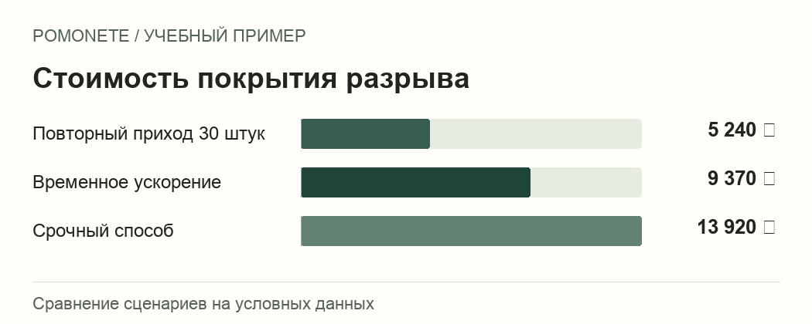

Два поставщика для селлера Яндекс Маркета. Сколько стоит быстрый резерв
Как посчитать бюджет отдельной быстрой партии и увидеть цену устойчивости поставок.
На Яндекс Маркете продаются насадки для кухонных комбайнов. Основной поставщик даёт низкую цену, запасной способен быстрее привезти небольшую партию по другой цене. Селлер хочет понять доплату за такой резерв и посмотреть, какую нехватку товара он действительно предотвратит.
Как оценить цену замены
Сравните один и тот же физический товар у двух поставщиков на идентичных условиях качества и комплектации. В разницу на штуку включайте только переменную часть. Складскую подготовку, договорную проверку и транспорт занесите отдельно. Неделя прихода важна для сопоставления со спросом.
Чтобы пересобрать расчёт «Стоимость покрытия разрыва» для своего магазина, перенесите в него исходные числа. В формуле A обозначает «разница в закупке на штуку, ₽», B обозначает «штуки у быстрого поставщика», C обозначает «разовые расходы, ₽». Переменную часть оценивают через объём, а разовую добавляют отдельно. Проверьте, что разовая величина ещё не включена в ставку. Запишите рядом период и охват каждого среза. Если для одной строки известна только оценка, оставьте пояснение непосредственно рядом с ней: по итоговой цифре источник уже не восстановить.
Стоимость покрытия разрыва = A × B + C
| Условие | Разница в закупке на штуку, ₽ | Штуки у быстрого поставщика | Разовые расходы, ₽ | Стоимость покрытия разрыва |
|---|---|---|---|---|
| Повторный приход 30 штук | 118 | 30 | 1 700 | 5 240 ₽ |
| Временное ускорение | 118 | 65 | 1 700 | 9 370 ₽ |
| Срочный способ | 168 | 65 | 3 000 | 13 920 ₽ |

В сценарии «Повторный приход 30 штук» в формулу подставляем разница в закупке на штуку, ₽ = 118, штуки у быстрого поставщика = 30, разовые расходы, ₽ = 1 700. Получается 5 240 ₽. Отдельный приход закрывает небольшой разрыв снабжения.
В сценарии «Временное ускорение» в формулу подставляем разница в закупке на штуку, ₽ = 118, штуки у быстрого поставщика = 65, разовые расходы, ₽ = 1 700. Получается 9 370 ₽. Покупается ещё один размер с теми же накладными расходами.
В сценарии «Срочный способ» в формулу подставляем разница в закупке на штуку, ₽ = 168, штуки у быстрого поставщика = 65, разовые расходы, ₽ = 3 000. Получается 13 920 ₽. Запас приходит раньше, но при более дорогой закупке и транспортировке.
Если «Повторный приход 30 штук» взять за исходную точку, «Временное ускорение» меняет показатель «стоимость покрытия разрыва» на 4 130 ₽, а «Срочный способ» на 8 680 ₽. Между двумя последними строками разница составляет 4 550 ₽ при вычитании второй из третьей. Смотрите, какой именно вход изменился между строками. Если менялись объём и условия одновременно, итог сравнения относится ко всему сочетанию.
В пересчёте на исходное значение разница второй строки составляет 78,82%. Здесь в знаменателе модуль первого результата, 5 240 ₽. Для показателя в процентах рядом сохраните и абсолютную разницу в процентных пунктах. Для малого исходного значения процентный скачок может оказаться крупным даже при скромном практическом эффекте. В рабочем отчёте оставьте оба исходных значения, чтобы при расширении выборки можно было пересчитать изменение.
Где спрятана выгода скорости
Запасной товар помогает только в период, когда основного товара не было бы. Если обе партии придут почти одновременно, лишний запас может лечь на полку. По дням и размерам найдите заказы, которые действительно можно успеть покрыть более ранним приходом.
Соберите небольшую исходную выборку для «Временное ускорение», прежде чем переносить правило на весь магазин. Нужны история продаж, журнал остатков и даты фактических приходов. Среди записей найдите одну обычную и одну с изменённым значением «разница в закупке на штуку, ₽». Убедитесь, что после пересчёта на сопоставимое окно обе строки дают те же результаты, которые видит исполнитель. Для ручных поправок оставьте короткое основание.
В историю поставок запишите обещанную и фактическую дату, момент доступности товара и интервал, в котором возник недозаказ. Разовые всплески спроса и дни без товара полезно отмечать отдельно. Когда данных мало, прогноз на ближайший горизонт лучше держать несколькими уровнями и привязывать каждый к своему действию. При высокой неопределённости небольшая партия с возможностью докупки даёт другую экономику, чем дешёвая крупная партия с долгим ожиданием.
Что сильнее всего меняет результат
Здесь проверим устойчивость числа 9 370 ₽, полученного для «Временное ускорение». Настраиваемые входы: «разница в закупке на штуку, ₽», «штуки у быстрого поставщика», «разовые расходы, ₽». Меняем по одному параметру с шагом около 10% от его значения. Для небольших исходных чисел разница округляется до доступной целой единицы. Сдвиги ниже относятся к исходному сценарию, поэтому читатель может сопоставить их в одних единицах.
- «Разница в закупке на штуку, ₽» меняется с 118 на 130. При прежних остальных входах получается 10 150 ₽, сдвиг составляет 780 ₽.
- «Штуки у быстрого поставщика» меняется с 65 на 71. При прежних остальных входах получается 10 078 ₽, сдвиг составляет 708 ₽.
- «Разовые расходы, ₽» меняется с 1 700 на 1 870. При прежних остальных входах получается 9 540 ₽, сдвиг составляет 170 ₽.
Наибольшее отклонение в примере связано с параметром «разница в закупке на штуку, ₽» и составляет 780 ₽. Сохраните в расчёте, почему выбран именно этот сдвиг. После следующей выгрузки вместо учебных шагов попробуйте подставить разницу между наблюдавшимися периодами. Так проверите, насколько устойчива цифра при фактических колебаниях вашего магазина.
Если отдельные модели у поставщиков отличаются, не суммируйте их как полностью взаимозаменяемые. Похожая комплектация может подходить только части покупателей. Для таких разновидностей посчитайте полезную долю и цену отклонений отдельной строкой.
Как согласовать объём
Сопоставьте доплату с вкладом продаж, которые вероятно сохранятся. Запишите последний срок подтверждения быстрой партии. После прихода пересчитайте фактический объём продаж и остаток до основного заказа, чтобы проверить размер страховки.
На очередном пересмотре отметьте, какие сроки реализовались и какой был спрос в дни с доступным запасом. Оценку качества считают на событии, которое наступило после составления прогноза. Так проще отделить неточность метода от изменившейся доступности поставщика. Храните старые допущения: когда рынок меняется, восстановить причину размера закупки можно по сохранённым датам и объёмам.
Заведите карточку наблюдения с тремя числами: исходный ориентир, факт после вмешательства и размер выборки. Для «стоимость покрытия разрыва» оставьте единицу из таблицы и дату подстановки. В аналитике продавца Яндекс Маркета показатель должен отвечать на тот же вопрос при повторном сборе. Если на следующем цикле изменятся исходники, сохраняйте расхождение вплоть до строки, которую сможет пересчитать коллега.